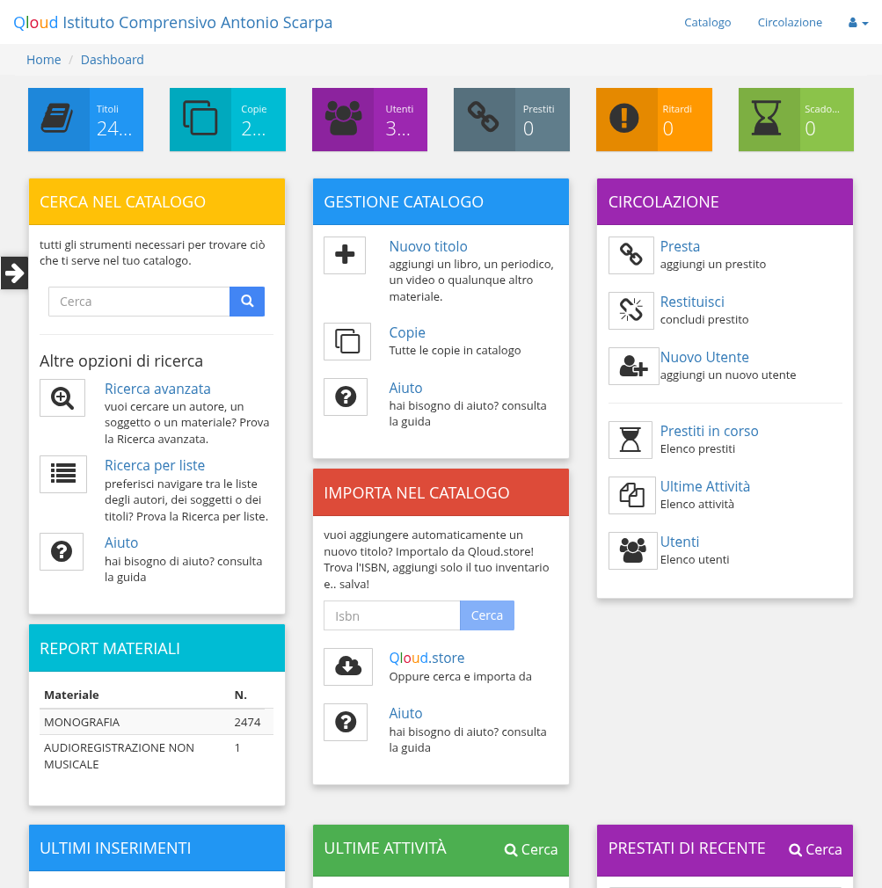

La base dati per libri e lettori
La gestione della biblioteca, dall'aggiornamento del catalogo alla circolazione delle copie (prestiti e restituzioni), è svolta tramite il sito Qloud, nella più grande Rete di Biblioteche Scolastiche in Italia.
La piattaforma di gestione della biblioteca è raggiungibile all'indirizzo:
http://app.icscarpa.myqloud.eu/
Per accedere sono necessarie le informazioni di username e password che ti sono state rilasciate dalla gestione della biblioteca.
Annotale, non dimenticarle e non condividerle con nessuno!
Effettuato l'accesso, ti troverai davanti il pannello di controllo di Qloud:
